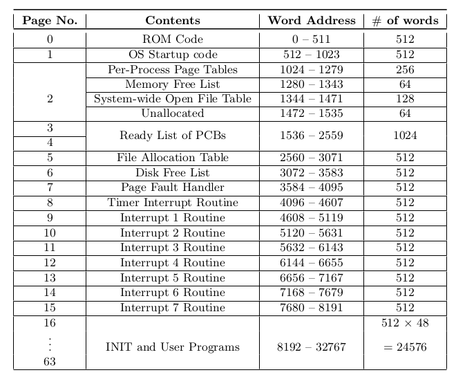
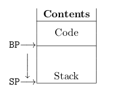
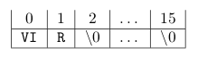

Introduction
XOS (Experimental Operating System) is an experimental operating system which is designed to be run on the XSM (Experimental String Machine) architecture which is a simulated machine hardware. XOS is intended as an instructional tool to help students learn various aspects about operating systems.
XOS is programmed using a custom language, SPL (System Programmer's Language) which compiles to XSM compatible code. (Refer SPL Specification) Application programs for XSM are written in APL (Application Programmer's Language). (Refer APL Specification )
The programs, data and operating system code is stored on a disk which has an XFS (Experimental File System) in it. (Refer XFS Specification)
The various functionalities of XOS include
- Process Management, includes scheduling and dispatching processes to the CPU. XOS is capable of \textit{multiprogramming} (the ability to run more than one process simultaneously). (Refer Process Management)
- Memory Management, involves allocating memory for processes, demand paging (loading memory pages from the disk as and when required). (Refer Memory Management)
- System Calls. XOS provides various system calls for the user processes to execute certain kernel level operations. (Refer System Calls )
Memory Organization
The operating system organizes memory as given below

- OS Startup code, loads the INIT process to memory, data structures like FAT and Disk Free List, and Interrupt Routines from the disk. (Refer Section 7.1)
- Per-Process Page Tables, used for address translation of logical addresses to physical address. (Refer ...)
- Memory Free List, is a list of free memory locations in the memory. Refer Section 4.3
- System-wide Open File Table, contains a details of files which are opened by the processes. Refer Section 5.3
- Ready List of PCBs, is a list of Process Control Blocks, which indicates the ready and terminated processes. Refer Section 3.3
- File Allocation Table, contains details about files stored on the disk, Refer Section 5.1
- Disk Free List, contains details about used and used blocks in the disk, Refer Section 5.2
- Page Fault Handler, contains the kernel code to be executed during a page fault exception, Refer Section 7.2
- Timer Interrupt Routine, contains the kernel code to be executed during a timer interrupt. Refer Section 7.3
- Interrupt Routines, contains kernel code to be executed during interrupts (1 to 7). Refer Section 7.4
- INIT and User Programs, is the memory space allocated for user pro- grams in execution. Refer Section 3.7
Process Management
Introduction
Any program in its execution is called a process. Processes will be loaded into memory before they start their execution. Each process occupies at most 4 pages in of the memory. The processor generates logical addresses with respect to a process during execution, which is translated to the physical address. This translation is done by the machine using page tables, Refer Section 3.2 of XSM Specification
The XSM architecture supports demand paging and so the machine does not fix the number of processes that can be run on it. However XOS has limited the number of process running simultaneously to 32, due to limitations in number of PCBs in the Ready List (Refer Section~\ref{sec:pcb}) and the number of Per-Process Page Tables (Refer Section~\ref{sec:pagetable})
Process Structure
A process in the memory has the following structure.
- Code Area : These are pages of the memory that contain the executable code loaded from the disk.
- Stack : This is the user stack used for program execution. The variables and data used during execution of program is stored in the stack. It grows in the direction of increasing word address.
The structure of a process is as shown

Process Control Block (PCB)
It contains data pertaining to the current state of the process. The size of the PCB is 32 words.
Structure of a PCB is given below
| 0 | 1 | 2 | 3 | 4 | 5 | 6 | 7-14 | 15-30 | 31 |
|---|
| PID | STATE | BP | SP | IP | PTBR | PTLR | R0 - R7 | Per-Process
Open File Table | ...Free... |
Process Identifier (PID)
The process identifier is a number from 0 to 31, which identifies the processes in memory. The PID of the current process can be calculated from the PTBR register.
Process State (STATE)
The process state corresponding to a process, indicated by STATE in the PCB stores the state of that process in the memory. A process can be in one of the following states.
- 0 for terminated, i.e. process has completed execution
- 1 for ready, i.e. process is waiting for the CPU to start execution.
- 2 for running, i.e. the process is currently running in the CPU
Registers
- IP: The word address of the currently executing instruction is stored in the IP (Instruction Pointer) register. The value of this instruction cannot be changed explicitly by any instruction.
- BP: The base address of the user stack is stored in the BP (Base Pointer)register.
- SP: The address of the stack top is stored in the SP (Stack Pointer)
- PTBR: TThe physical address of the Per-Process Page Table of the process is stored in the PTBR (Page Table Base Register).
- PTLR: The length of the Per-Process Page Table (No. of entries) is stored in the PTLR (Page Table Length Register). It is fixed as 4 for every process in XOS.
Each process has its own set of values for the various registers. Words 2 – 6 in
the PCB stores the values of the registers associated with the process .
Per-Process Open File Table
The Per-Process Open File Table contains details of files opened by the corre sponding process. Every entry in this table occupies 2 words. A maximum of 8 files can be opened by a process at a time, i.e. up to 8 entries in the PCB. It is stored in the PCB from words 15 to 30. Its structure is given below 1 word Pointer to system-wide open file table entry 1 word LSEEK position
| Pointer to system-wide open file table entry | LSEEK position |
- The OS maintains a system wide open file table which contains details of
all the files that are opened by processes (Refer Section 5.3). The entry
in the Per-Process File Table points to the System-wide Open File Table
entry corresponding to the file.
-
It also stores the LSEEK position for the file, which indicates the word in
the file to which the process currently points to for read/write operations.
Ready List
The list of PCBs stored in the memory is used as a Ready List by the operating system to schedule processes to CPU. The STATE in the PCB indicates whether a process is ready for execution or not. A new process in memory is scheduled for execution by circularly traversing through the list of PCBs stored in memory and selecting the first Ready process after the PCB of the currently running process in the list.
| Physical Page Number | Auxiliary Information |
A maximum of 32 PCBs can be stored in the memory, and hence the maximum number of processes that can be run simultaneously is limited to 32. The PCB list is stored in pages 3 and 4 in the memory (words 1536 – 2559)
The Per-Process Page Tables
TEvery process in XOS has a Per-Process Page Table. A total of 32 PCBs and 32 Page Tables in total are available, which limits the number of processes that can be run to 32.
The Per-Process Page Table stores the physical page number corresponding to each logical page associated with the process. The logical page number can vary from 0 to 3 for each process. Therefore, each process has 4 entries in the page table. Per-Process Page Tables are stored in Page 2, words 1024 – 1279 in the memory (256 words = 32 processes × 4 pages )
When a process is loaded only the disk addresses of the program are stored, and by demand paging (Refer Section 4.2) pages are loaded/allocated for the process. Once all pages are loaded, each entry contains the page number where the data specified by the logical address resides in the memory and auxiliary information which includes valid/invalid bit, reference bit etc.
Multiprogramming
The operating system allows multiple processes to be run on the machine and manages the system resources among these processes. This process of simultaneous execution of multiple processes is known as multiprogramming.
To support multiprogramming in the system, the kernel makes use of the scheduler which is present in the Timer Interrupt Service Routine in Page 8 of the memory.
INIT and other user programs
The INIT process is the first user program that is loaded by the OS after start up. The INIT and other user processes uses the memory pages 16 - 63 for execution (Code Area and Stack).
Memory Management
Introduction
XSM uses a paging mechanism for address translation (Refer Section 3.2 of XSM Specification). XOS supports virtual memory, i.e. it supports execution of processes that are not completely in memory. It follows pure demand paging strategy for memory management. Pages are allocated as and when required during execution.
Paging
Paging is the memory management scheme that permits the physical address space of a process to be non-contiguous. Each process has its own page table (Refer Section 3.5), which is used for paging.
Paging is the memory management scheme that permits the physical address space of a process to be non-contiguous. Each process has its own page table (Refer Section 3.5), which is used for paging.
The Per-Process Page Table contains information relating to the actual location in the memory. Each valid entry of a page table contains the page number in the memory where the data specified by the logical address resides. The address of Page Table of the currently executing process is stored in PTBR and length of the page table is set to 4 in PTLR of the machine.
The structure of an entry in the page table is given below.
| Physical Page Number | Auxiliary Information |
- Physical Page Number: The logical page numbers generated by the CPU for a process can be in the range 0 to 3. The actual location of these logical pages are given by the physical page number. Address translation is done by the machine (Refer Section 3.2 of XSM Specification)
- Auxiliary Information:: The logical page numbers generated by the CPU for a process can be in the range 0 to 3. The actual location of these logical pages are given by the physical page number. Address translation is done by the machine (Refer Section 3.2 of XSM Specification)

- Valid/Invalid Bit (VI) is a value 1 or 0 for valid and invalid respectively. It is valid if and only if the entry is a physical memory location. It is invalid if either the entry points to location on the disk or if its not in the logical address space of the process.
- Reference Bit (R): This bit is set to 1 by the machine every time a page is accessed. This bit is used for page replacement (Refer Section 7.2) by the OS
Memory Free List
PThe free list of the memory consists of 64 entries. Each entry is of size one word. Thus, the total size of the free list is thus 64 words. It is present in words 1280 to 1343 in memory. (words 256 to 319 of Page ) of the memory. Refer Chapter 2. Each entry of the free list contains a value of either 0 or 1 indicating whether the corresponding page in the memory is free or not respectively.
Virtual Memory
XOS allows virtual memory management, i.e. running processes without having all the pages in memory. It makes use of a backing store or swap in the disk to replace pages from the memory and allocate the emptied memory to another process. This increases the total number of processes that can be run simulta neously on the OS.
XOS starts executing a process with no pages of that process in memory. Pages are loaded into the memory from the disk only when it is required by the CPU. This strategy is known as pure demand paging. The page table is loaded with the disk address of the data blocks corresponding to the process and all entries are set as invalid and not referenced initially (‘00’ as auxiliary information).
Page Fault Exceptions occur when a required page is not currently loaded into the memory. In this case the Exception Handler Routine is responsible for loading the required page to the memory from the disk. If no free memory is available a page replacement technique is used to find a victim page. The page replacement technique used in XOS is a second chance algorithm(Refer Silberschatz, Galvin, Gagne: Operating System Concepts) which uses the reference 12 bits in the auxiliary information. The victim page is swapped out to to the disk (swap area) to accommodate the required page.
File allocation table (FAT) is a table that has an entry for each file present in
the disk. FAT is stored in page number 5 in the memory.
Files
The operating system requires accessing the file system (XFS) while loading programs, and reading data from the files. The operating system maintains a memory copy of the file system data structures like FAT(File Allocation Table) and Disk Free List (Refer Chapter 2). It is loaded from the disk to the memory during operating system boot.
Apart from the file system data structures XOS maintains details about files opened by all processes in the System-wide Open File Table. XOS uses a scratchpad to access files in the memory which will be explained further in this chapter.
File Allocation Table
File allocation table (FAT) is a table that has an entry for each file present in the disk. FAT is stored in page number 5 in the memory.
The structure of FAT entry is given below